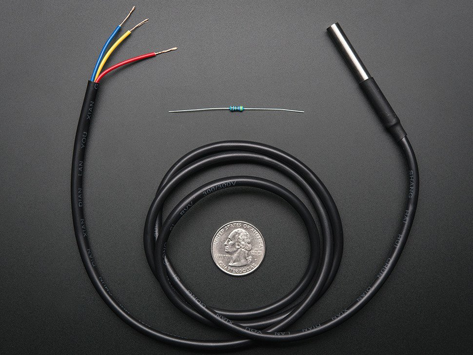
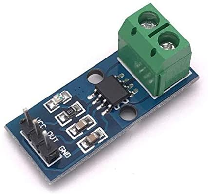
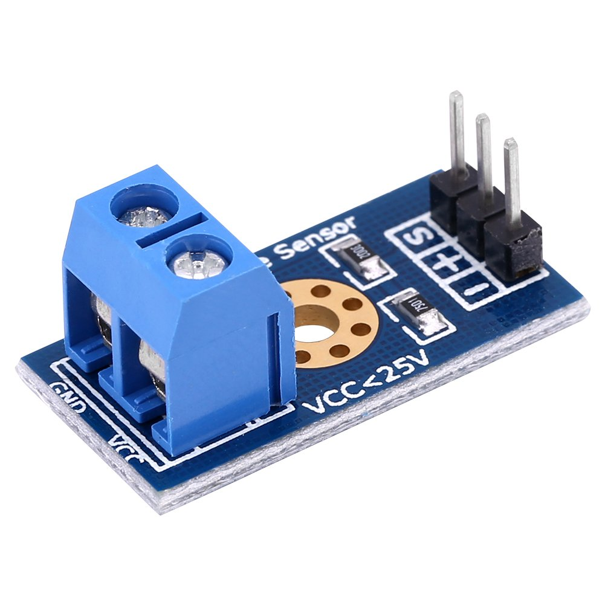
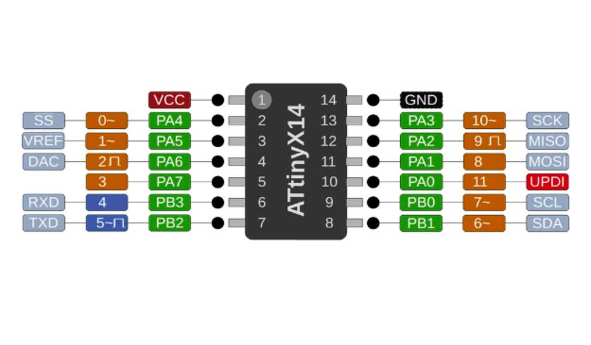
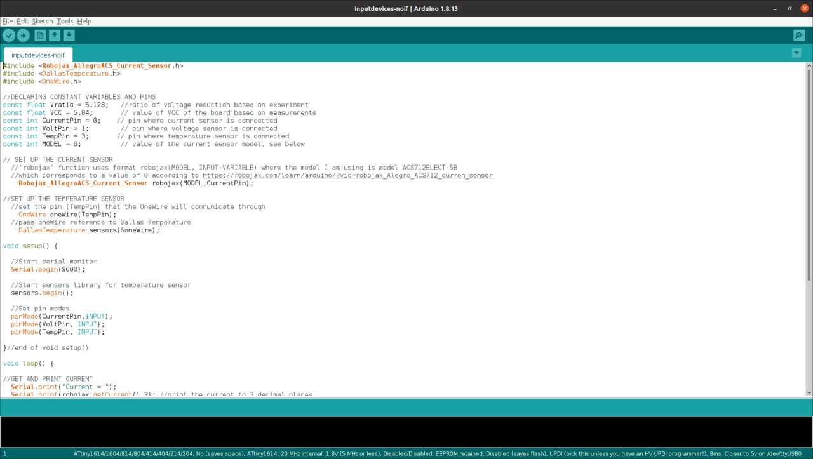
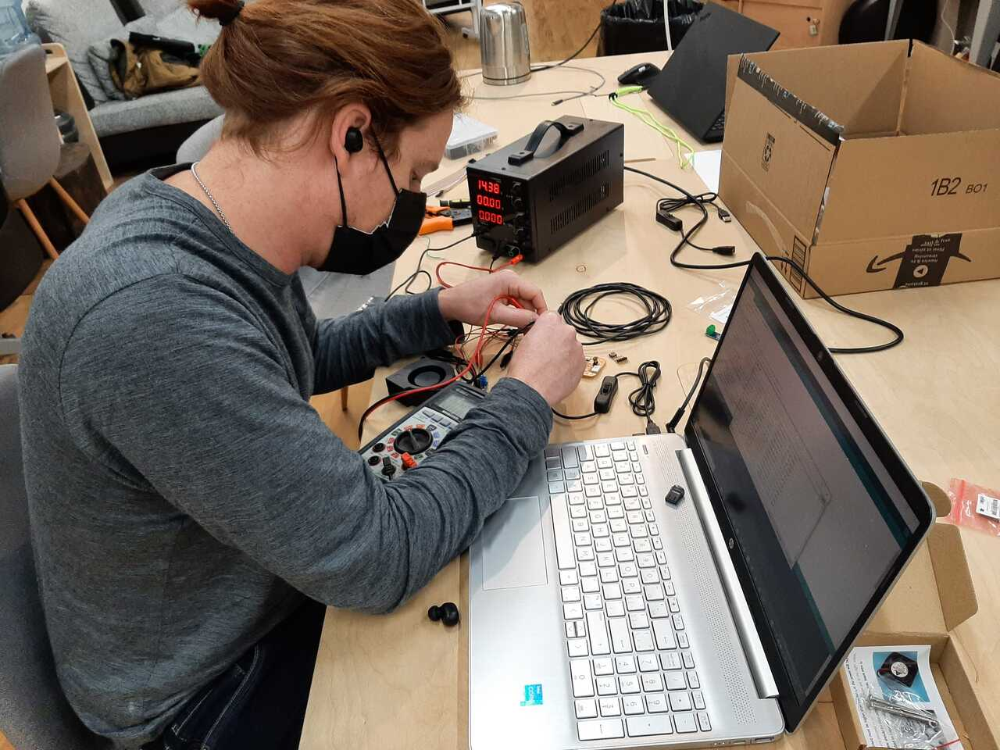

The objective for this week was to learn about input devices. For my final project, I will need to measure and output the current, voltage, and temperature. Therefore, I elected to learn to use and program these input devices for this week. The assignment overview and learning outcomes are shared below.
Group assignment:
- Probe an input device(s)’s analog and digital signals
- Document your work (in a group or individually)
Individual assignment:
- Measure something: add a sensor to a microcontroller board that you have designed and read it.
Learning outcomes
- Demonstrate workflows used in sensing something with input device(s) and MCU board
- Link to the group assignment page
- Document what you learned from interfacing an input device(s) to microcontroller and how the physical property relates to the measured results
- Document your design and fabrication process or linked to previous examples.
- Explain the programming process/es you used
- Explain problems and how you fixed them
- Include original design files and source code
- Include a ‘hero shot/video’ of your board
Group Assignment
For the group assignment it was necessary to code and probe the signal from given sensors. We elected to do this using a current generator and an multimeter to read the voltage and the Serial monitor of an Arduino program for the temperature probe.
We connected and wired the current meter and the volt meter and tested the output voltage in order to measure the output voltage which corresponds to the analog value on a scale of 0-5V.

as you can see the multimeter voltage was reading 2.3 V. I was measuring the difference between the output pin and the VCC pin so in reality the voltage value was 5-2.3 or 2.7 V. The current sensor measures between -5A and 5A making 2.5V equal to 0A. This means that 1A of current is represented by 2.5V/5A = 0.2 V/A. Therefore a reading of 2.7 V means a reading of 1 A above 0. This matches with the device that was plugged in which was a head set USB charger that charges at 5V and 1A.
Having characterize the sensors we were able to move ahead with the individual assignment.
Individual Assignment
For the individual assignment we were tasked with adding a sensor to a microcontroller board that we have designed and reading it. To do this I intend to use the Adrianino that I created in assignment 7. Electronics design and use jumpers to the pinouts of the analog signals. For the final project I will properly design and integrate these sensors into my PCB. The workflow used to perform the tasks in this assignment are discussed in the following section.
Workflow
- Determine the technical specifications of sensors
- Connect your sensors to your microcontroller board
- Program your microcontroller to read your sensor
- Test your program
- Debug and adjust as necessary
1. Determine specifications of sensors
The first step is to look at the documentation of the sensors and determine their specifications and how to connect them to your microchip. Below is an overview of the specifications and
Temperature sensor
The temperature sensore we used is called a OneWire digital temperature sensor by Dallas Instruments. Details abou tthe prodoct can be found at the following link
This is a pre-wired and waterproofed (with heat shrink) version of a 1 Wire DS18B20-compatible sensor. Handy for when you need to measure something far away, or in wet conditions. While the sensor is good up to 125°C the cable is jacketed in PVC so we suggest keeping it under 100°C. Because they are digital, you don’t get any signal degradation even over long distances! These 1-wire digital temperature sensors are fairly precise (±0.5°C over much of the range) and can give up to 12 bits of precision from the onboard digital-to-analog converter. They work great with any microcontroller using a single digital pin, and you can even connect multiple ones to the same pin, each one has a unique 64-bit ID burned in at the factory to differentiate them. Usable with 3.0-5.0V systems.
In order to use this board using Arduino IDE you will need to download the following library using the following link. A tutorial on how to use the Temperature sensor can be found in the youtube video below.
Next is to determine the specifications of the current sensor.
Current sensor
The current sensor that we selected is a current sensor that outputs and analog signal that can read a current from between -5A and +5A. The specifications are below.
- The current sensor chips: ACS712ELC-05A
- Works with 5V from Arduino.
- On board LED power indicator
- Can measure the ±5A corresponding to the analog output 185mV/A
- Module board size: 31 (mm) x13 (mm)
Note that to use this sensor you will need to download the library that is included in it. You can find the library to add to your Arduino IDE here
25V max Voltage sensor
One of the limitations of the AT-tiny chip is that it can only read a maximum analog value of 5V, but the voltage for my system may reach above that and even get up to 12V. It will be important to measure the current and voltage so that we can monitize the power produced and sold. The specifications for this sensor are listed below:
- This module is based on principle of resistive voltage divider design, can make the red terminal connector input.
- Voltage reduced by 5 times.
- Analog input voltages up to 5V, the voltage detection module input voltage not greater than 5Vx5=25V.
- Small in size, light weight, convenient to use.
- There are total four pieces of modules in one set that you may use for many projects.
2. Connect your sensors to your microcontroller board
The next step in the workflow is to connect your sensors to your microcontroller board. The micro controller board is an AT-tiny-1614. The board has analog/digital pins at pins PA4, PA5, PA6, and PA7. These correspond to Arduino Adresses of 0, 1, 2, and 3 respectively. The image below illustrates the pinout.
Once the pins had been assigned I wired each of the sensors to the respective pins as shown in the short gif below.
***IMPORTANT NOTE: For the temperature sensor to work, a 4.99k resistor must be wired between the VCC and Readout wires of the temperature sensor.
3. Program your microcontroller
To program my microcontroller I elected to use Arduino IDE. Two of my sensors required libraries to be added to my Arduino IDE in order to function, I will therefore discuss briefly how to add the libraries below. You can find a tutorial on the Arduino website here.
A) Install any necessary ZIP libraries using library manager
The first step is to download and extract the zip folders. You can download the zip folders that contain the libraries for each device using the following links:
- Current sensor
- Temperature sensor
- Temperature sensor 2](https://github.com/PaulStoffregen/OneWire/archive/refs/heads/master.zip)
Once downloaded find your Arduino folder that contains your libraries and paste the zip files there. You can then use the Library manager under Sketch -> Include Library -> Add .Zip library in Arduino to upload them. You can find a tutorial on the Arduino website here.
once completed you can include them in your code by using the following headers
#include <library_name.h>
Note that all three of the zip folder libraries need to be installed but only the Robojax and Dallas temperature need to be included. Once completed you can write your code.
B) Write your code
The next step is to write your code, be sure to use any commands that have been added by including any libraries.
For the current sensor I looked at the code example code that was included at this link.
For the voltage sensor we only need to read the voltage and apply a multiplier of 5.128 based on the experimental test run with current generator and volt meter.
For the temperature sensor I used some sample code from the example folder included in the zip folder.
The above image shows the completed code that was written and uploaded to the microchip.
4. Test your program
Run your program and test your results. The video below shows the results from the first time running the program. As you can see on the screen it was outputing various values but further indication found that it was not correct and there was an issue.
Therefore, the next step in the workflow is to debug the board and sensors.
5. Debug and adjust as necessary
The first time I tested my program I noticed that none of the sensors were outputing the proper results into the serial monitor. It was therefore necessary to debug. There did not seem to be any issues with the code as it was compiling so I first checked voltages at different parts on the chip using a multimeter.
Upon investigation with the multimeter, it was found that there was an issue with the pinning and some wiring adjustments had to be made. Doing this made the voltage input device begin to read and output correctly. The results are shown in the image and video below.
Unfortunately, I was unable to debug the current and temperature sensors in time. The next step will be to wire the sensors to an Arduino board to see if it is a hardware issue, but I feel it is more likely a problem in the code in which the libraries aren’t being called properly.
Investigation of the voltage at the current pin seemed correct, therefore it is most likely a programming issue.
Below is a copy of the program as designed for the AT-Tiny 1614 board.
#include <Robojax_AllegroACS_Current_Sensor.h>
#include <DallasTemperature.h>
#include <OneWire.h>
//DECLARING CONSTANT VARIABLES AND PINS
const float Vratio = 5.128; //ratio of voltage reduction based on experiment
const float VCC = 5.04; // value of VCC of the board based on measurements
const int CurrentPin = 0; // pin where current sensor is conncected
const int VoltPin = 1; // pin where voltage sensor is connected
const int TempPin = 3; // pin where temperature sensor is connected
const int MODEL = 0; // value of the current sensor model, see below
// SET UP THE CURRENT SENSOR
//'robojax' function uses format robojax(MODEL, INPUT-VARIABLE) where the model I am using is model ACS712ELECT-5B
//which corresponds to a value of 0 according to https://robojax.com/learn/arduino/?vid=robojax_Alegro_ACS712_curren_sensor
Robojax_AllegroACS_Current_Sensor robojax(MODEL,CurrentPin);
//SET UP THE TEMPERATURE SENSOR
//set the pin (TempPin) that the OneWire will communicate through
OneWire oneWire(TempPin);
//pass oneWire reference to Dallas Temperature
DallasTemperature sensors(&oneWire);
void setup() {
//Start serial monitor
Serial.begin(9600);
//Start sensors library for temperature sensor
sensors.begin();
//Set pin modes
pinMode(CurrentPin,INPUT);
pinMode(VoltPin, INPUT);
pinMode(TempPin, INPUT);
}//end of void setup()
void loop() {
//GET AND PRINT CURRENT
Serial.print("Current = ");
Serial.print(robojax.getCurrent(),3); //print the current to 3 decimal places
Serial.print(" A ");
//GET AND PRINT VOLTAGE
//calculate voltage and convert from bit reading to voltage value in volts
float Voltage = VCC*analogRead(VoltPin)*Vratio/1023;
Serial.print("Voltage = ");
Serial.print(Voltage);
Serial.print(" V ");
//GET AND PRINT TEMPERATURE
float tempC = sensors.getTempCByIndex(0);
if(tempC != DEVICE_DISCONNECTED_C)
{
Serial.print("Temperature = ");
Serial.print(tempC);
Serial.println(" degC ");
}
else
{
Serial.println("Temperature = Could not read data");
}//end of if/else statement
delay(1500);
}//end of void loop()